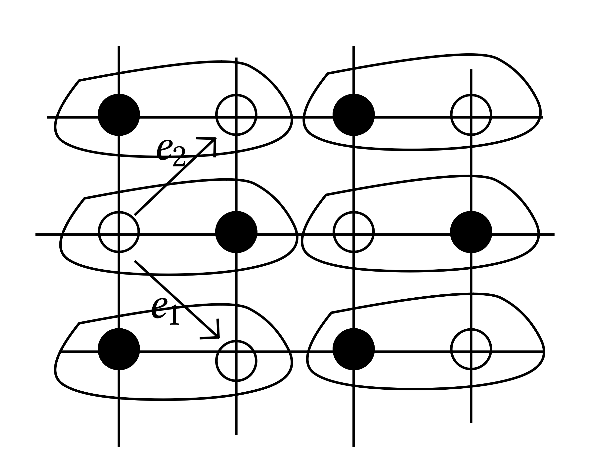
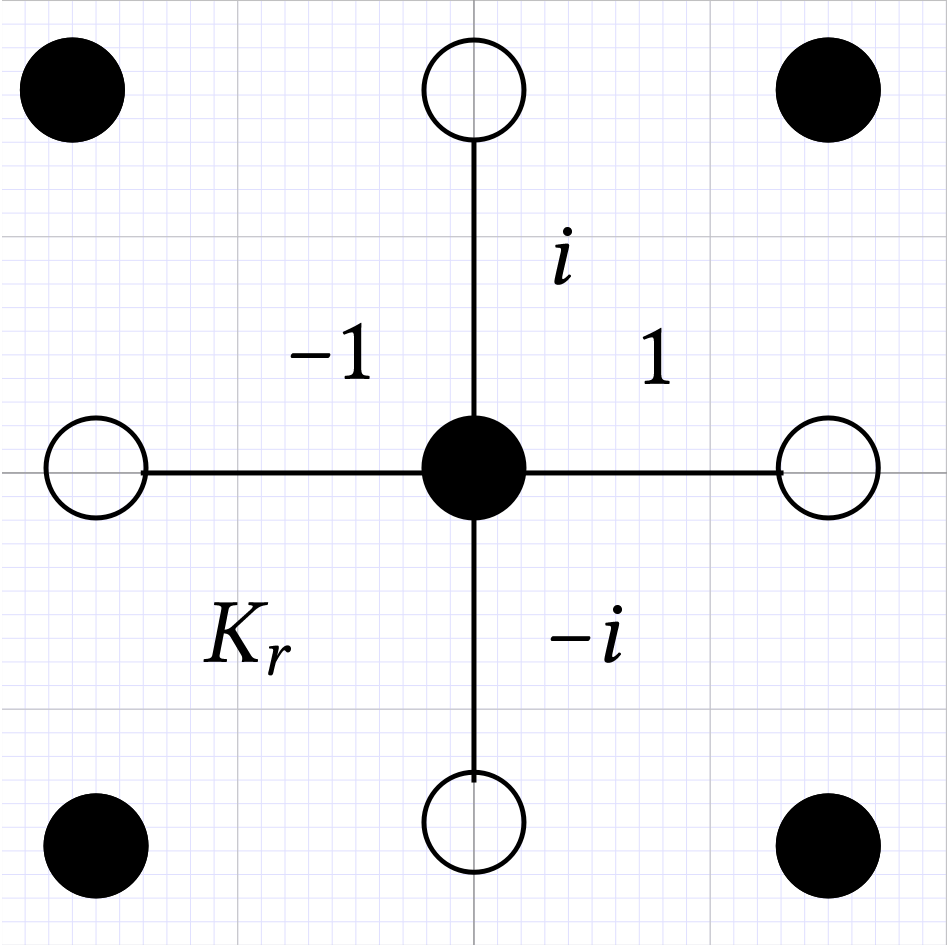

INI Seminar 20181010 Toninelli (revised version 20181012)
Interacting dimer model

\(M\) matchings. \(\Pi_{L, \underline{t}} \propto \prod_{e \in M} t_e\) the non-interacting measure has an infinite volume limit \(\Pi_{\underline{t}}\) which is determinantal. Under the limit measure \(\Pi_{\underline{t}}\) behaves like the massless Gaussian free field. It is true when \(\underline{t} = (1, 1, 1, 1)\) and in an open region of weights.
One can consider \(\varphi \in C_c^{\infty}\) and \(\int \varphi = 0\) and \(\varepsilon^2 \sum_x h (x) \varphi (\varepsilon x) \xRightarrow{d} \mathcal{N} \left( 0, \int \mathrm{d} x \mathrm{d} y \varphi (x) \varphi (y) G (x - y) \right)\) when \(\underline{t} = (1, 1, 1, 1)\).
Propagator of the non-interacting model
with \(\mu (p) = t_1 + i t_2 e^{i p_1} + \cdots\).
where \(\phi_+\) is related to the gradient of \(\mu\) at its two simple zeros \(p^+\) and \(p^-\):
and \(\phi_+^{\ast} = - \phi_-\). When \(\)\(\underline{t} = (1, 1, 1, 1)\) we have \(p^+ = (0, 0)\) and \(p^- = (\pi, \pi)\).
Interacting model
where \(W (M)\) is a local function of dimer configuration summed over all translations.
Model 1 |
Model 2 |
|
(which is linked to the \(6\)-vertex models with \(\Delta = 1 - e^{\lambda}\)) where we say (arbitrarily) that even faces are those having black vertices on the upper left and lower right corners. |
We ask \(\lambda \in \mathbb{R}\) being (very) small and \(W\) to be local.
Recall the definition of \(K_r\) depending on the type of edge: |
 |
Theorem
\(\Pi_{L, \underline{t}, \lambda} \rightarrow \Pi_{\lambda}\)
If \(e\) is an edge of type \(r = 1, 2, 3, 4\) and \(b (e) = x\), and \(e'\) is of type \(r'\) and \(b (e') = x'\) then
as \(| x - x' | \rightarrow \infty\), where \(\nu = \nu (\lambda)\) and \(A, B\) are analytic functions of \(\lambda\).
The height field converges to a log correlated Gaussian field, for example we have, under \(\Pi_{\lambda}\),
and in the same limit
Note that the oscillating term disappear in the variance.
Remark
and \(\nu (\lambda)\) depends non–trivially on the weight \(\underline{t}\) but recall that \(\nu (0) = 1\) for any \(\underline{t}\).
Theorem
for any \(| \lambda | \leqslant \lambda_0\). (Proven for \(\underline{t} = (1, 1, 1, 1)\), but work in progress for more general parameters).
Now we want to show how to represent the correlation functions and partition function as a Grassmann integral.
Kasteleyn theory
\(G \subset \mathbb{Z}^2\) bipartite, admitting perfect matchings like a box \(2 m \times 2 n\).
where the matrix \(\mathcal{K}\) has row indexed by black and colums indexed by white sites and
On the torus one need to modify the method. One need to define other three matrices \(\mathcal{K}_{\theta_1 {,} \theta_2}\) obtained by multiplying the edges which go out of the torus in direction \(e_1\) by \((- 1)^{\theta_1}\) and in direction \(e_2\) by \((- 1)^{\theta_2 }\), then
for certain coefficients \(c_{\theta_1, \theta_2}\).
From the formula for the partition function one can derive all the formulas for edge edge correlations.
I will pretend from now on that the partition function is given by a single determinant, namely
because \(\mathcal{K}_{1, 1}\) is invertible. Note that \(\mathcal{K}_{0, 0} = 0\). These matrices are translation invariant so the can be diagonalized in Fourier basis:
for \(p \in D = \left\{ (p_1, p_2) : p_i = \frac{2 \pi}{L} \left( n_i + \frac{1}{2} \right), 0 \leqslant n_i \leqslant L - 1 \right\}\) and then
Therefore from this is easy to deduce that the free energy is
and
We assign Grassmann variables \(\{ \psi^+_x, \psi^-_x \}_{x \in \mathbb{T}_L}\) where \(\psi^+_x\) is on black vertex \(b_x\) and \(\psi^-_x\) on the white vertex \(w_x\). Define the integral of a non–commuting polynomial of the \(\{ \psi^+_x, \psi^-_x \}_{x \in \mathbb{T}_L}\)
and the integral change sign when we exchange two variables (so variables cannot appear more than linearly), moreover when any variable is missing the integral is zero.
For example
A few consequences:
we can rewrite the determinant of a matrix as a Grassmann integral. If \(A\) is an \(n \times n\) matrix, then
Which recall the Gaussian integral
Moreover
again similar to the Gaussian formula for the covariance.
Fermionic Wick's rule. Let us denote (with \(A^{- 1} = G\))
then
where we introduce the \(n \times n\) matrix \(G_n (\underline{x}, \underline{y})\) as \(G_n (\underline{x}, \underline{y})_{i, j} = G (x_i, y_j)\) for \(\underline{x} = (x_1, \ldots, x_n)\) and \(\underline{y} = (y_1, \ldots, y_n)\) and \(i, j = 1, \ldots, n\).
For the dimer model we obtain
The partition function of the interacting model can be also expressed as a fermionic integral. Define
where \(A_e \in \mathbb{R}\). This is equivalent to the replacement \(t_e \rightarrow t_e e^{A_e}\) therefore we consider
Proposition
where \(\gamma = \begin{array}{|l|} f \end{array}, \begin{array}{l} \hline f\\ \hline \end{array}\) and \(E_e = K (e) \psi^+_x \psi^-_x\) if \(e = (b_x, w_y)\) and \(\alpha = e^{\lambda} - 1 \approx \lambda\).
If we are interested in the generating function of the interacting model we replace \(S (\psi) \rightarrow S_A (\psi)\) and \(E_e \rightarrow E_e e^{A_e}\).